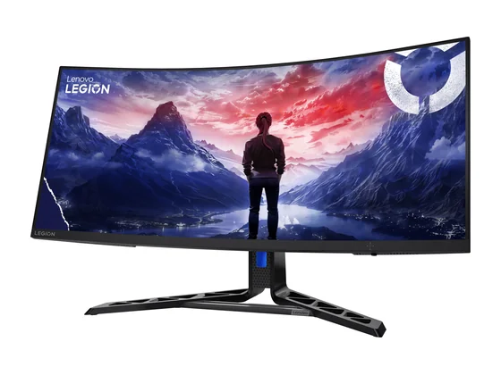
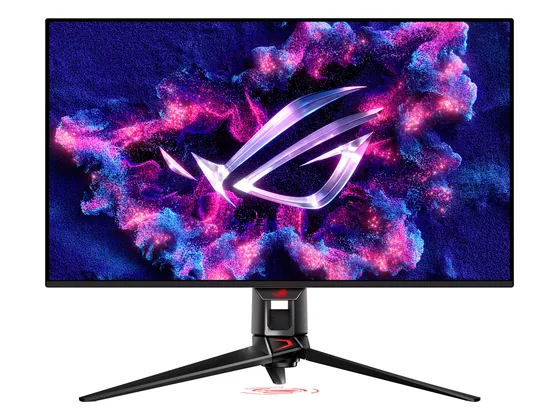
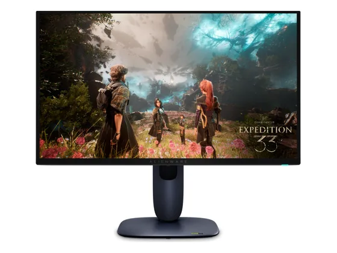

Lenovo Legion R34w-30 : avis, tests et prix
Le verdict en une phrase. Un 34 pouces ultra-large incurvé à 180 Hz pour environ 240 € : immersion maximale et pied bien réglable. La dalle VA laisse des traînées visibles dans les scènes rapides.
N° 3 sur 10 dans le top 10 Écrans PC gaming.

Pour qui ?
Vous jouez à des jeux de course, de simulation ou d'aventure et voulez un écran très large et immersif sans dépasser 250 €.
Vous jouez à des FPS compétitifs ou retouchez des photos : traînées et courbure gênent.
Le consensus de la presse
Une seule note chiffrée à ce jour : 9,0/10, attribuée par PCMasters. À lire comme un avis isolé, pas comme un consensus.
Où l'acheter
La configuration peut différer d'un marchand à l'autre : vérifiez la fiche avant d'acheter. Le prix Electro Dépôt est celui de son flux produits officiel à la date indiquée ; seul le prix affiché par le marchand fait foi. Seuls les liens Amazon et Electro Dépôt sont affiliés à ce jour ; les autres sont de simples liens directs. Aucun n'influence les notes ni le classement.
Tous les tests recensés
Chaque ligne renvoie vers le test d'origine. Les notes sont converties sur 10 ; « test » signale un article sans note chiffrée. Notre méthode.
- PCMasters9,0
- HardwareInsidetest
- Hardwareluxxtest
Les alternatives pour le même usage
Tout le top 10 → AOC Agon Q27G4ZDL'OLED gaming devenu abordable : contraste infini, couleurs justes sans réglage, 280 Hz et un pied réglable, pour le prix d'un bon écran IPS.
N° 2 · Le grand 4K OLED
AOC Agon Q27G4ZDL'OLED gaming devenu abordable : contraste infini, couleurs justes sans réglage, 280 Hz et un pied réglable, pour le prix d'un bon écran IPS.
N° 2 · Le grand 4K OLED

Asus ROG Swift PG32UCDMLe 32 pouces 4K OLED de référence : image exceptionnelle, 240 Hz, connectique complète avec USB-C 90 W. Cher et gourmand, mais la presse est unanime. N° 4 · La 4K OLED sur 27"
Alienware AW2725QLa 4K à 240 Hz sur 27 pouces en QD-OLED : une image d'une finesse et d'un contraste remarquables, adorée par la presse, avec une garantie marquage de 3 ans.Questions fréquentes
Que pense la presse de l'écran Lenovo Legion R34w-30 ?
La note presse moyenne est de 9,0/10, calculée sur 1 note. Un 34 pouces ultra-large incurvé à 180 Hz pour environ 240 € : immersion maximale et pied bien réglable. La dalle VA laisse des traînées visibles dans les scènes rapides.
Quels sont les points faibles relevés par les tests ?
Traînées visibles dans les scènes rapides (dalle VA) ; Contraste jugé décevant par Hardwareluxx ; Courbure peu adaptée à la retouche photo.
À qui s'adresse le modèle Lenovo Legion R34w-30 ?
Vous jouez à des jeux de course, de simulation ou d'aventure et voulez un écran très large et immersif sans dépasser 250 €. À éviter si : vous jouez à des FPS compétitifs ou retouchez des photos : traînées et courbure gênent.
Où l'acheter, et à quel prix ?
Comptez environ 240 € (prix indicatif constaté en octobre 2026). Nous l'avons trouvé en vente chez Electro Dépôt. Les prix changent vite et la configuration peut différer d'un marchand à l'autre : seul le prix affiché par le marchand fait foi.